Bilibili offers an ecological answer to contaminated rivers, lakes and coastal waters. The floating platforms clean the water around them and, at the same time, give people a public space to sit, meet and spend time by the water. The project is on display at the Hemp Museum Berlin.
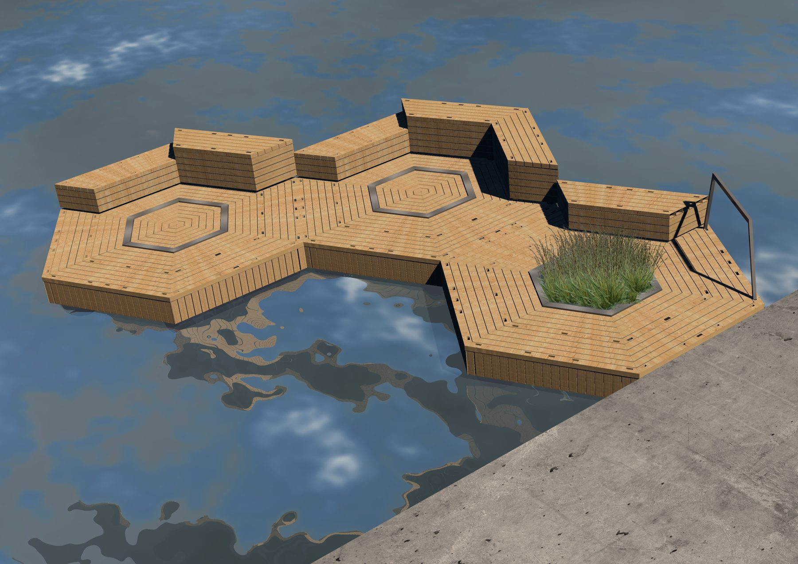
The brief
Oil spills and toxins pollute rivers, lakes and seas. For my final project at HTW Berlin I looked for a way to clean contaminated water through ecological means, and to turn the infrastructure doing that work into a public space. I used these early sketches to communicate my first ideas.
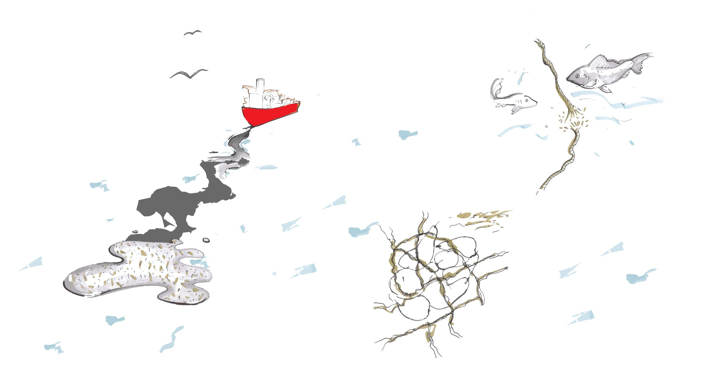
Research
I started with case studies of bioremediation: hemp and kenaf crops that clean soil while they grow, milled kenaf fibres that absorb oil, floating wetlands already used in rivers and lakes, and oyster mushrooms that compost oil-soaked fibres. They showed me that every system depends on the type of pollution and the place, and that a filter only works with a service behind it that collects the material and gives it a second life.
How it works
The platforms filter water through absorption, using two kinds of bioremediators:
- Natural fibres (hemp or kenaf), held in the filter unit inside each platform.
- Floating wetlands, plants that take up oil and toxins through their roots.
Bilibili works in both saltwater and freshwater. Its hexagonal modules connect to each other, so a platform can grow, and the add-ons and the location decide how the public uses it.
The material cycle
The fibres and plants don’t end up as waste. A service system collects them and sends them on to a second life:
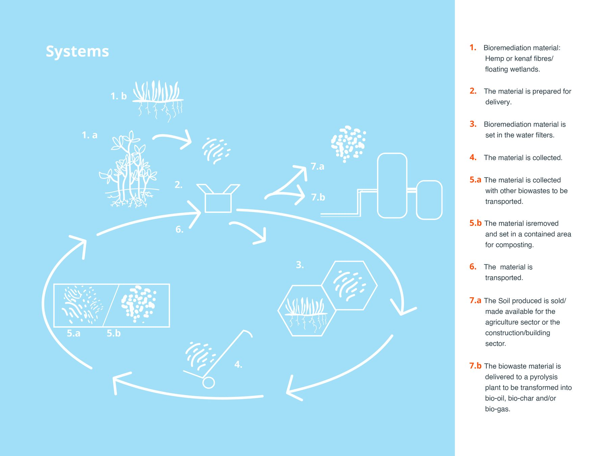
- The bioremediation material: hemp or kenaf fibres and floating wetlands.
- The material is prepared for delivery.
- It is set into the water filters.
- The material is collected.
- It is either collected with other biowaste for transport, or set in a contained area for composting. Specific mushrooms break down oils, toxins and even plastics.
- The material is transported.
- The compost becomes soil for agriculture or construction, or the biowaste goes to a pyrolysis plant and is turned into bio-oil, bio-char or bio-gas.
Design guidelines
After experimenting with different shapes and seating options, I set two kinds of guidelines.
Space analysis. I studied spatial relations to find out how much room each person needs. A seated person needs at least 50 cm of free space between the seat and any other object to feel comfortable. For the filter to clean well, its interior has to hold 0.1 m³ of hemp or kenaf fibres. Together these set the platform sizes, from 160 cm to 300 cm across.
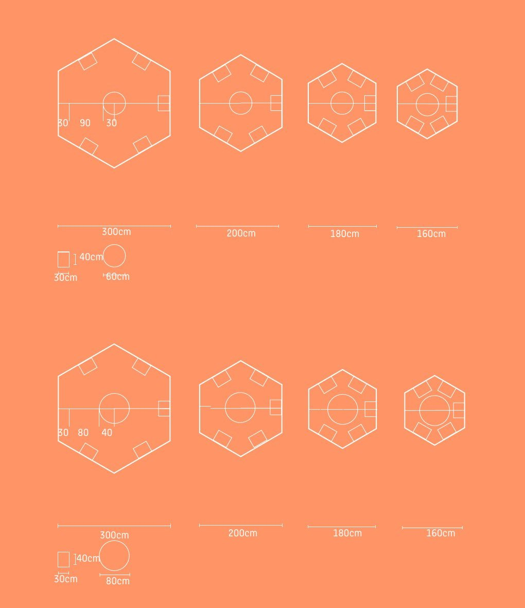
User needs. I wanted people to feel at ease and free to choose how they use the platforms, so I chose a neutral, less suggestive form. The seats connect and stack for more variations, and a perforated surface takes add-ons, which makes each platform more personal.
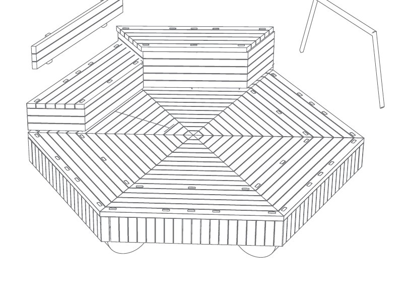
Prototyping and form exploration
I explored the shapes in paper and cardboard models: seating options, hexagonal platforms at different sizes, and how the modules connect.
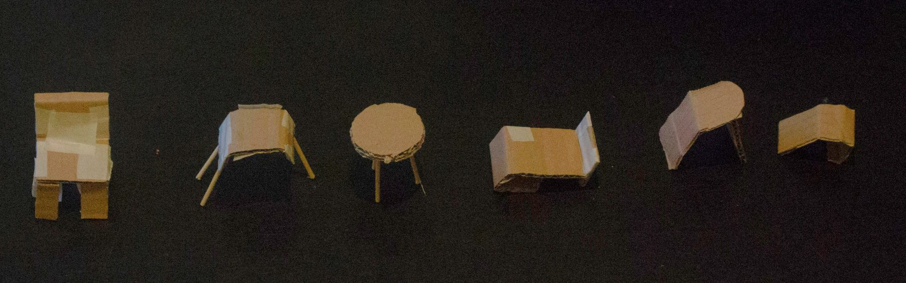
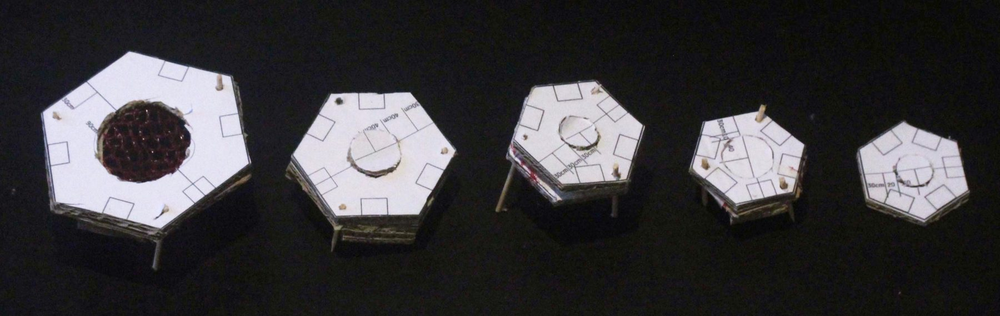
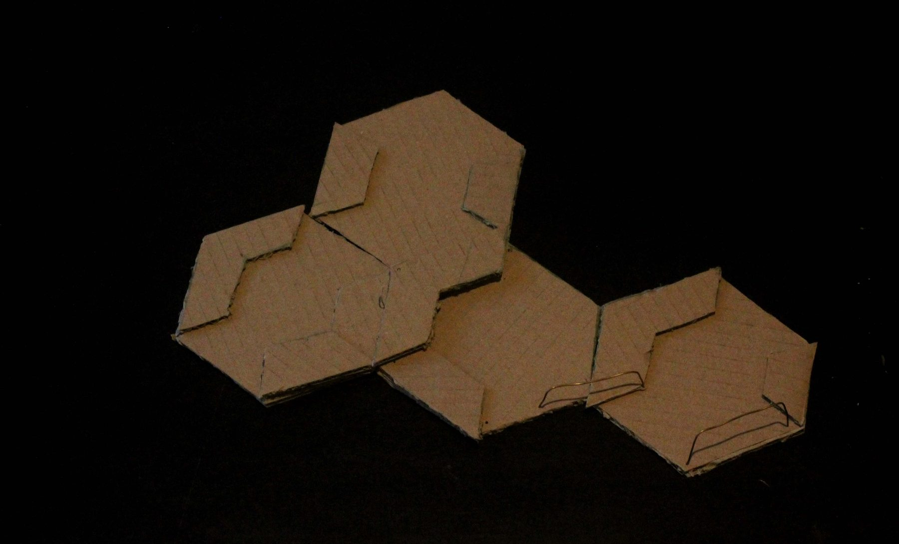
Engineering the platform
Safety came first, because Bilibili is a public space for every age group. A frame of hollow stainless steel tubes carries the larch deck, and clamps join the frames of neighbouring platforms. In the centre, a hemp net on snap hooks holds the fibres, and three stainless steel floats keep water moving through it so the fibres absorb more oil.
I chose materials that don’t add new pollution: larch because it isn’t endangered, is moderately priced and resists rot, stainless steel because it resists corrosion in fresh and salt water, and hemp instead of synthetic nets, which end up as ghost nets.
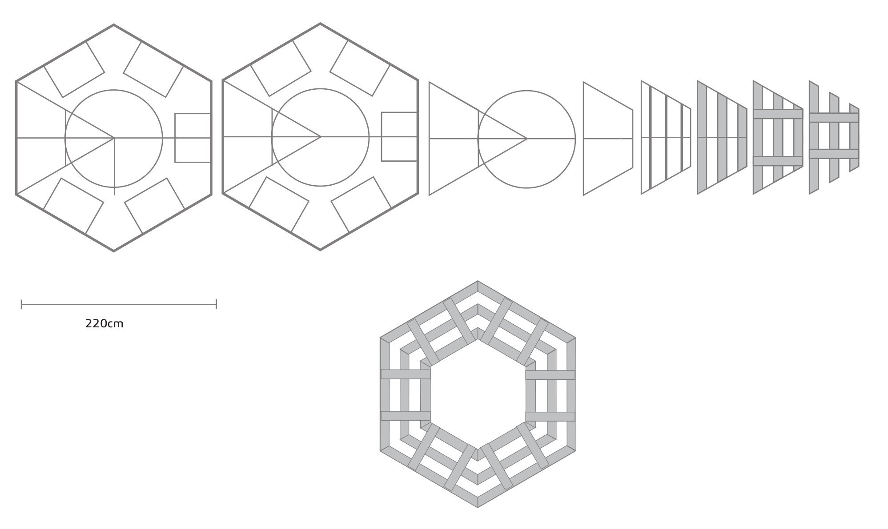
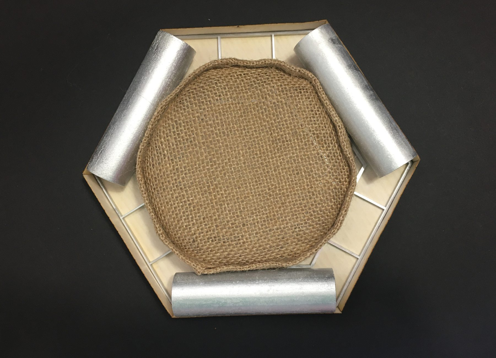
Final model
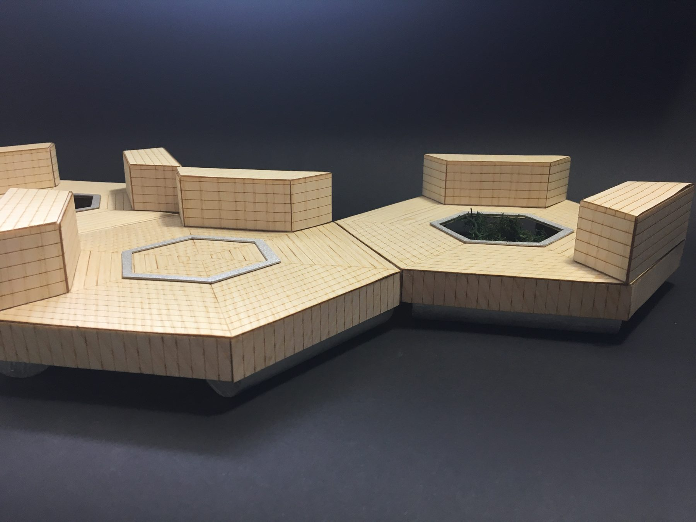
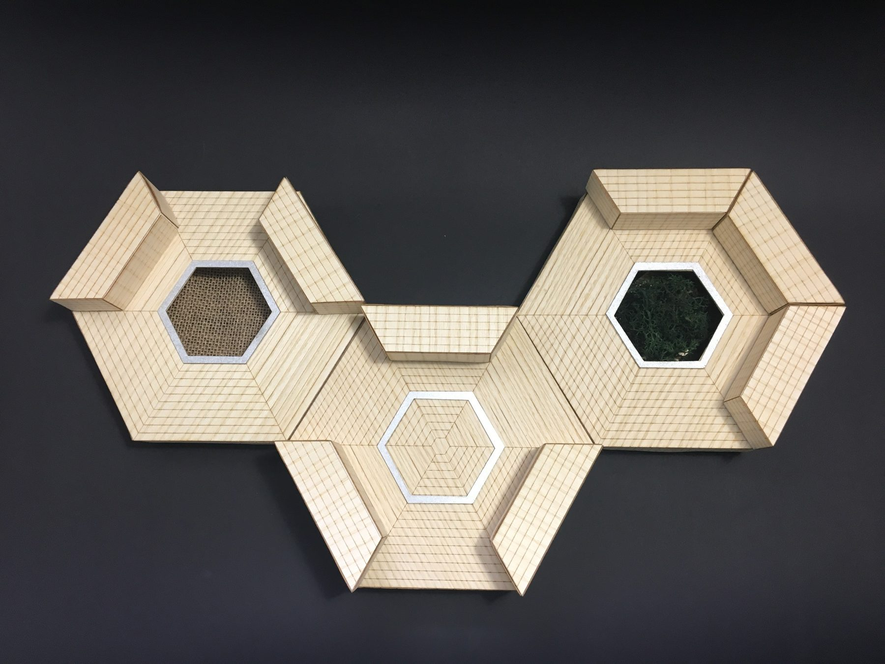
Next steps
The next step is to design more add-ons for the platforms. A wider range of add-ons would give people more ways to personalise each platform and more options for leisure, so every Bilibili can fit the place and the community around it.